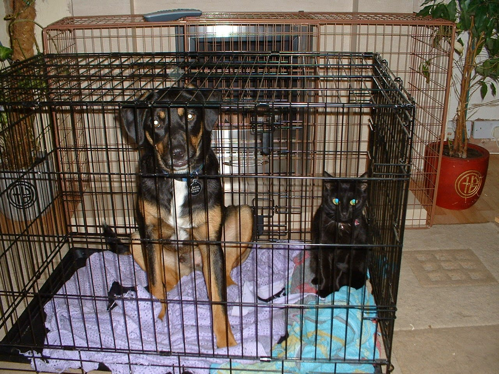

This blog is created by Jekyll however the blog posts are written in the excellent org-mode and published to HTML.
The problem is that the directory structures of the org posts doesn't match the directory structure created by Jekyll. Assume your root directory looks like:
_org/ - posts/ - 2015-09-05-a-blog-post.org - images/ - an-image.png _posts/ images/ _site/
Remember that
_posts/andimages/are populated automatically when published by org-mode and Jekyll will then populate_site/.
In order to include that image in the org document you would need to add a link to ../images/an-image.png. The org mode publishing system will copy those images to /images however Jekyll will serve the blog post at /2015/09/05/a-blog-post/ which contains an (incorrect) link to ../images/an-image.png.
The right answer is almost certainly to customise the publishing system but I am just not that good of an emacs dude (yet!). So, my hack of hacks is based on the following:
/
/images/an-image.png is reachable from ../images/an-image.png when sourced from /a/
This means that the 'relativeness' of the images directory and the published URL directory can be symmetrical if Jekyll serves /2015-09-05-a-blog-post/ instead of /2015/09/05/a-blog-post/.
To achieve this simply change the permalink in your root _config.yml to /:year-:month-:day-:title from the default /:categories/:year/:month/:day/:title.html. This means Jekyll will serve this blog post as a single url. Images are served from /images which is one directory up from the-blog-url that Jekyll is serving this from so the relative URL ../images/an-image.png will work.
URLs really shouldn't change that much. Why does Jekyll choose this strategy? Is it good for SEO? No idea (does anybody really understand that stuff?). What downsides are there to having the date embedded in the URL? So this might not be a sensible long-term strategy - I dunno.
Everybody loves animals, so here is a photo of one of my dogs and cats looking very non-plussed:

Figure 1: Bruce and Lily, sitting in a tree, kis….